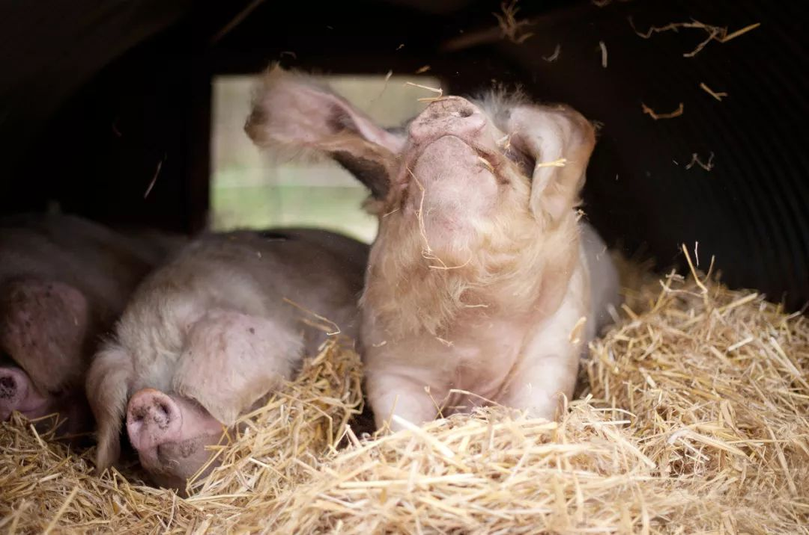
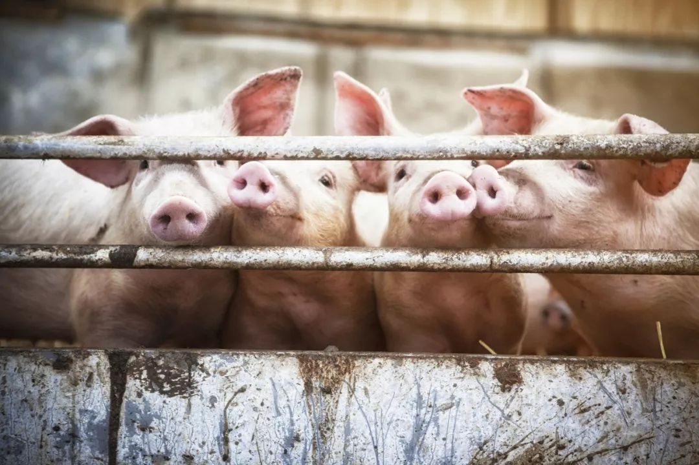
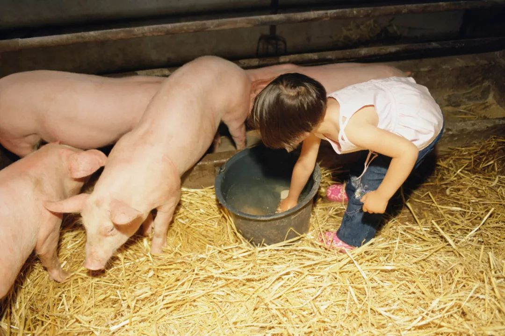
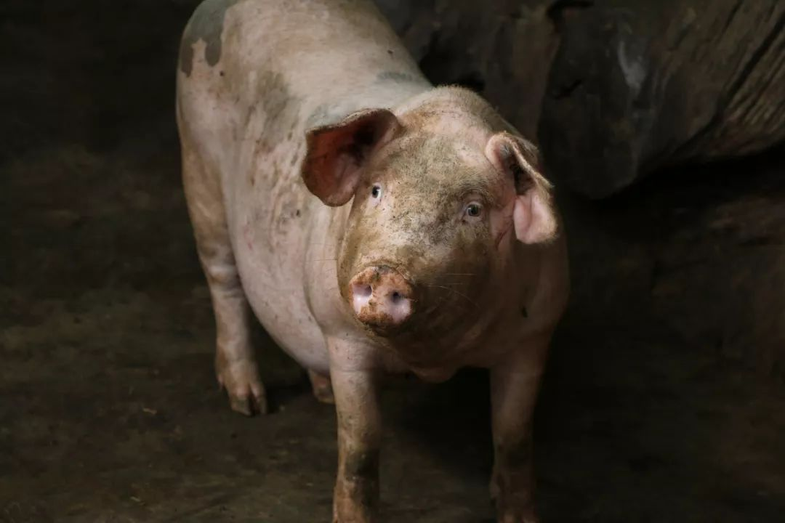
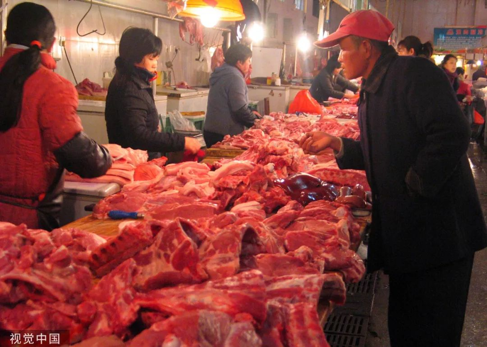

一天三顿改一顿，物流阻、饲料缺导致湖北种猪被限食
原文链接 备份链接 01.02.2020本文字数：2386，阅读时长大约4分钟 导读：一般都是准备饲料到初五，尽管公司备货到初八，这两天也怕不够喂，已经采取限食举措，一天原本吃三顿，现在改成吃一顿。 作者 | 第一财经 邵海鹏 “现在不 …

猪饲料的主要成分是玉米和豆粕，这看似简单，却是一条牵涉很广的供应链和交通链。湖北省不是玉米的主产区，玉米来自东北。1月28号，湖北省家禽业协会分别向中国储备粮管理集团和中粮集团发出紧急求援函，希望两家公司对口支援湖北玉米和豆粕。湖北省交通管制已经有所松动，但工人复工仍有较大困难。
实习记者 | 李晓洁
记者 | 杨璐
猪也要断粮了
▲▲▲
湖北宜都市聂家河镇的老贺是当地养猪户，他这个年并不好过。往年的这个时候，老贺存栏的400多头猪，已经有100多头可以开始卖了，但现在，他还在为猪饲料着急。
腊月二十七，老贺开了一小时车，去附近镇上的饲料厂进货，按正常的量进了10吨全价料，如果每天喂1吨，这些饲料够他的猪吃10天左右。大年初一，老贺所在的村开始封路，他有点意识到疫情的严重性，但没想到会封多久。直到初四，猪饲料所剩无几，饲料厂还没开工，村里封路的措施却越来越严，横幅、栏杆横跨在村与村之间，老贺才开始给400多头猪减量，一天只喂一半的量，大约能撑到2月4号。**即使这样，老贺还得想其他办法，比如在朋友圈求助，向附近的农户收集玉米。
**

图 | 视觉中国
但定量喂食不是长久之计，猪吃不饱，一是生长得慢；二是免疫力下降，猪容易生病。减量了几天，猪已经明眼可见地变瘦。老贺说，“镇上的饲料厂初六开工，初七就把库存饲料卖光了，我去问的时候，饲料厂已经没有原料可以加工了。”附近镇子的饲料厂是当地几百家养猪户目前补充饲料的主要渠道，虽然平日也会从外省进饲料，但现在，“外省的饲料根本运不过来。”
饲料厂没有原料，是疫情下的湖北的普遍现象。何洁是宜昌市饲料行业协会的会长，宜昌九鼎牧业公司的董事，公司主要加工、生产猪饲料、家禽饲料和水产料，做批发直销，客户基本面向省内。他告诉本刊，饲料厂在春节前一般会储备一些成品饲料，供给年后急需饲料的养殖户，今年因为疫情的影响，厂子迟迟没有开工，但库存还是在初七那天基本用完。“因为有些客户情况特别紧急，已经没办法维持了。”这些紧急的客户，要么是饲料储备不足，要么是心理恐慌，早早地联系上何洁，所以库存很快就没了。
疫情让养猪产业链梗阻
▲▲▲
湖北省内的养猪户，首先到达饲料厂就不容易。为了防止疫情扩散，湖北省内陆续实行了交通管制，必须有运送救援物资的绿色通行证才能上路，否则要受到处罚。买饲料需要养猪户自己开车到饲料厂去领取。为了确保农业生产，湖北省现在也给农户发放通行证，有需求的人可以跟当地政府申请，核实后发放，效用为期一天。可问题是，除了公路，要想到达饲料厂，还得经过蜿蜒曲折的乡村道路，它属于不同的村子，现在村村都设置了路障。何洁说：“因为是疫情防控特殊时期，有的村级公路不知道是被谁用泥堵上了，还是有很多客户拿不到饲料。”
何洁在大年三十就意识到了疫情的影响。他在当天的微信群里看到了交通管制的信息，得知初一早上6点开封，紧接着，宜昌整个周边县市都在执行交通管制。“一下子就紧张起来。”这让他想到去年的非洲猪瘟，担心类似的病毒侵袭情况在人身上发生。初二那天，公司成立了应急管理小组，对之后的保产工作进行分工。一是在内部，统计客户的饲料需求和工厂储备数量；二是在外部加强与政府的沟通，让政府了解养殖业对饲料需求的特殊性，但当时并没有得到政府的明确回复。同时，工厂购买了几千只工人用的劳保口罩及其他防护物资，算是提前做了些自救工作。

图 | 视觉中国
尽管他自己尽了力，但饲料厂缺少原料、工人无法复工的外部因素，是依靠他自己没办法解决的。
猪饲料的主要成分是玉米和豆粕，这看似简单，却是一条供应链和交通链。湖北省不是玉米的主产区，玉米来自东北。何洁告诉本刊，他们工厂的玉米一般是从大连运到南通港，在南通港走水路进入湖北，运到各个厂家。除了水路，陆路交通主要是省内和省外进来的汽车运输，省内运送油糠、麸皮等原料；省外运送氨基酸、维生素之类原料。
因为疫情在全国范围的蔓延，1月27号，沈阳铁路局下达了对湖北武汉潜江等地停运通知，南京港、南通港、安庆港对湖北方向实行交通管制，省际之间的汽运交通困难，导致饲料原料输送困难。1月28号，湖北省家禽业协会分别向中国储备粮管理集团和中粮集团发出紧急求援函，希望两家公司对口支援湖北玉米和豆粕。1月30号，湖北省重点农牧集团晨科农牧在其微信平台发布求救文章，希望各界关注湖北省的几亿只鸡和1600多万头猪。

图 | 摄图网
交通管制情况已经有所松动。湖北省交通运输厅在2月1日发布的《厅党组扩大会议要求：确保防疫物资、生活保障物资、特殊人员运输通道》中提到，交通绝不能中断，要强化与外省、综合交通的沟通协调，要确保外省支援湖北的物资运输通畅。晨科农牧也在网络平台上更新消息，称“东北玉米在东北的运输启动，已经有玉米等饲料原料装出。”
但是除了饲料，工人复工也有很大的困难。码头装卸工、饲料厂工人、运输工人等人员暂时还不能或不愿工作。宜都市红花套镇临近长江，镇政府工作人员告诉本刊，他们镇子上的水路暂时还在封闭，码头属于企业，现在镇上所有企业都是停工状态。而何洁的饲料厂也有部分工人被困在小区内隔离。没被隔离的工人中，不排除一部分有恐慌心理，“他们不愿意到人多的地方做事”。再加上湖北疫情严重，有些地方“只进不出”，外省的运输司机嫌麻烦，不太愿意来。
2月3日，何洁终于等到宜昌市农业农村局、防控指挥部的批示，开始小规模复工。据他所知，宜昌市有两家饲料厂复工，湖北省其他市区也选择了少量优秀企业复工，部分原料可以经水路和陆路运往湖北。“如果是往年，现在厂子已经搞得热火朝天了。”何洁说。
对价格的影响
▲▲▲
去年的非洲猪瘟导致猪肉价格暴涨，根据农业农村部的数据，全国猪肉平均价格最高达到每公斤近60元。猪瘟也让养猪户受到巨大损失，好不容易在去年年底有所缓解，新冠肺炎又给养猪户带来了阻碍。
养猪户和饲料厂现在所遇到的困境，很快就会传导到消费端。猪贩子和猪肉屠宰场目前也大都没开工。彭华是湖北的猪贩子，主要面向湖北省内进行生猪买卖交易，一般把猪卖给屠宰场和生肉加工集团。往年在初四左右，他就开始去养猪户那里收猪，一天十几头、二十几头都有可能。

图 | 摄图网
彭华告诉本刊，今年他一单生意还没做，第一是因为封路，第二是因为没有销售渠道。屠宰场还没开门，别的渠道也都没人买。“现在群众需要的主要还是米油面这些生活必需品，对猪肉的需求还不多。”彭华说，只要有人需要猪肉，封路都不算是问题，但就他所知，现在不仅是湖北，一些跑外省的猪贩子，也很少有开工的，只是湖北这边更严重。
在宜昌开了11年屠宰场的陈旺也有同样的经历，往年初三，屠宰场开工，60个工人陆续来上班，但今年陈旺还不知道什么时候才能复工。一是因为他供货的几家本地超市，目前还没有向他发出订单需求，“没人需要猪肉”；二是因为政府还没通知具体可以开工的时间，“我也不清楚要等到什么时候。”
彭华告诉本刊，如果继续等下去，长时间无法开工，养猪户存栏中已经成年的肥猪卖不出去，**一旦开工，大批量的猪就会因为需要交易出去而降低价格，这对养猪户又是另一方面的打击。
**

图 | 摄图网
在饲料短缺的情况下，养猪户通常会为了节省饲料而减量，或是给猪喂食自制的简易玉米粉，长期营养不足的猪还会引发其他问题。湖南执业兽医黎瑞雄说，“健康的猪身上也携带病原但不会发病，一旦饲料营养不足，产生应激则很容易出现亚健康甚至导致疾病。对于猪肉的卫生，则无须过多担心。”猪病专家樊福好也告诉本刊，“营养不足或营养不平衡，都会导致生产性能的下降，甚至会导致疫病的爆发流行。尤其是在非洲猪瘟仍有威胁的情况之下，这个问题一旦发生，将会更严重。”
相比于湖北的养猪户，疫情较为严重的其他地区，因为目前封路的程度较弱，每村都还留着一条主干道，养猪户受到的打击也小得多。
安徽某村的养猪散户蔡峰，年前卖掉了约100头猪，现在存栏有30多头种猪，等着生猪仔，同时也养了60多只羊。因为春节前的饲料储备不足，蔡峰在1月30号联系到县城的一家饲料厂，进了10吨猪饲料，大约能吃到5月份。蔡峰说，村里的路没有全封，留着通往省道的主路。“我住在省道附近，还能进到饲料。
**”只不过饲料的运费比之前涨了不少，原先一吨饲料是30-50的运费，现在要近200块。

**
河南也是疫情较为严重的省份，信阳市固始县的养猪户汪友中，在非洲猪瘟肆虐前存栏有1000多头猪，现在仅有约100头种猪。年前备下的10吨饲料，大约能撑到正月二十。汪友忠告诉本刊，自己一直在关注新冠肺炎。他几天前联系了县城里的经销商，让商家给他留点饲料，但他更担心的是没有人愿意出来工作，猪也销售不出去。
而湖北的养猪户老贺已无暇顾及其他，他想的是，“我的猪能不能卖出去都还不要紧，我可以多喂一段时间。肺炎人传人的问题，在我们农村来说也没有蛮大关系，我们自己也管控得很好，我现在就担心饲料问题。”听说何洁的饲料厂小规模复工的消息，他决定，明天一早就驾车去取货。
（文中陈旺、蔡峰为化名）
**作者档案
**
杨璐
《三联生活周刊》资深主笔。我就静静地看着这个世界。
26分钟前


三联生活周刊
个人微博：@三联璐璐杨

⊙文章版权归《三联生活周刊》所有，欢迎转发到朋友圈，转载开白请联系后台。未经同意，严禁转载至网站、APP等。
原文链接 备份链接 01.02.2020本文字数：2386，阅读时长大约4分钟 导读：一般都是准备饲料到初五，尽管公司备货到初八，这两天也怕不够喂，已经采取限食举措，一天原本吃三顿，现在改成吃一顿。 作者 | 第一财经 邵海鹏 “现在不 …
原文链接 备份链接 数据来源：腾讯新冠肺炎疫情实时追踪 截至2月4日上午7时16分， 全国新型肺炎确诊个案超过19700例。 距离武汉封城，已经过去了11天。 普通人被困家中，医护人员依然奋战在一线…… 在抗 …
原文链接 备份链接 禽蛋产量位居全国第六的湖北省，养殖产业正遭受严峻考验。 全文3187字，阅读约需6分钟 “新洲区大概有1000万只蛋鸡，现在每天销量只有一二十万。有些养殖户的饲料只剩两三天了。”武汉市新洲区家禽业协会会长马新辉说，“ …
原文链接 备份链接 什么拉长了社会捐赠物资从红十字会的仓库到疫情一线医务人员手中的最后短暂的路程？又是谁夺走了医生上战场的武器？ 记者 | 郭苏妍 叶雨晨 邓舒夏 王一越 编辑 | 张云亭 制图 | 程 星 2月1日，中国红十字总会工作 …
原文链接 备份链接 *************▲************* 2020年1月5日破壳的小鸡，羽毛还没有长好，住在温室。 （易忠华供图/图） 全文共*2872*字，阅读大约需要7分钟。 卖一波成鸡——进一批饲料和小鸡——还 …